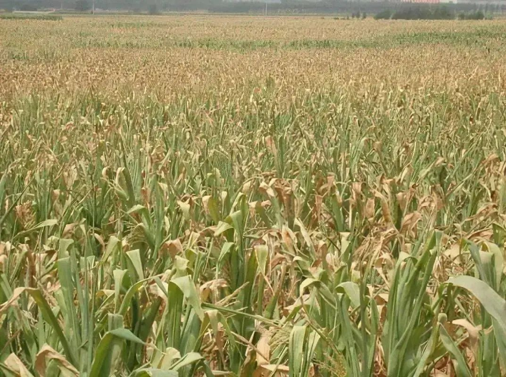
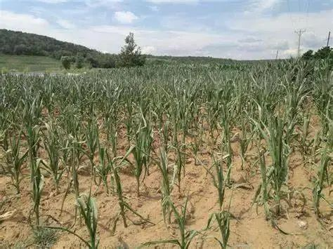
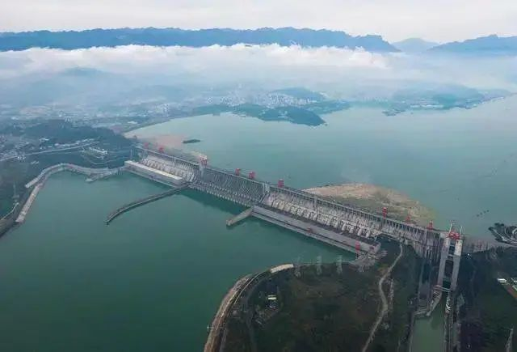
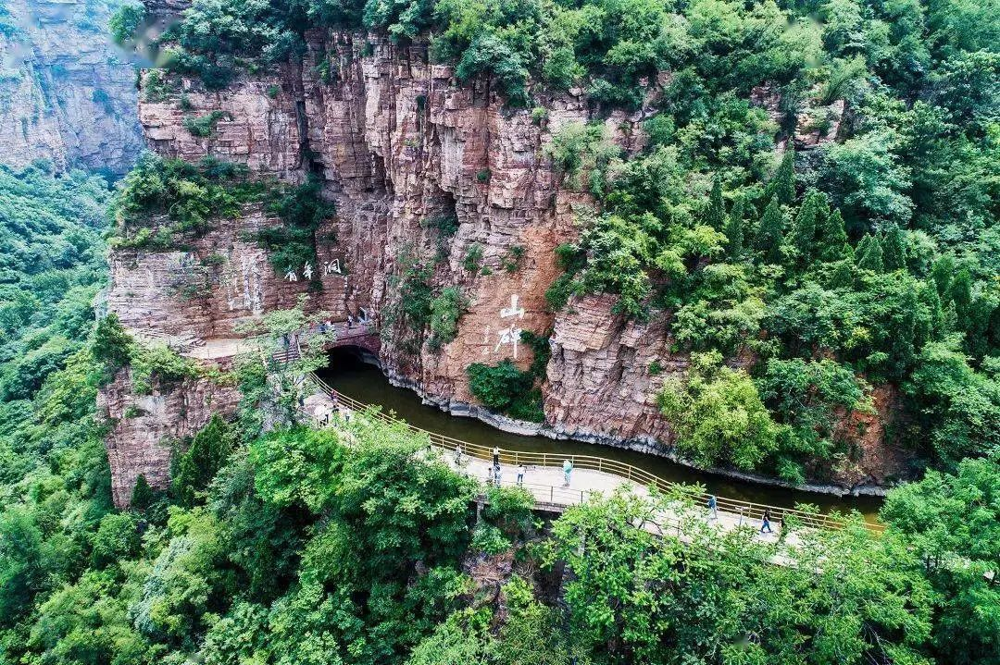
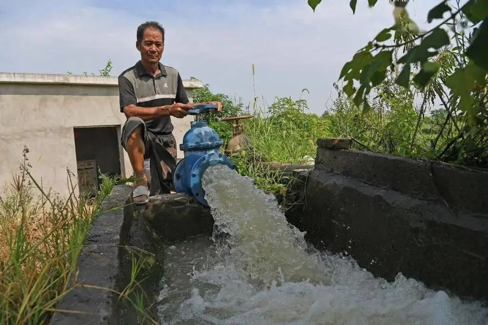
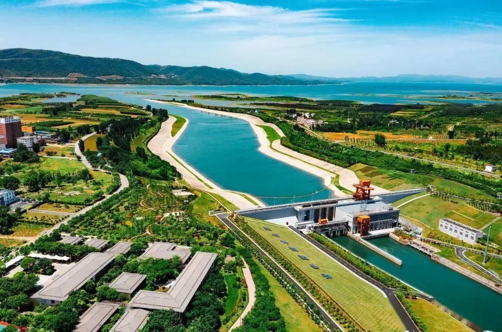

干旱是由水分的收与支或供与需不平衡形成的水分短缺现象。
旱灾是什么？旱灾的全称是干旱灾害，它是指由于降水减少、水工程供水不足引起的用水短缺，并对生活、生产和生态造成危害的事件。

干旱与旱灾的区别在哪里？干旱主要是由降水偏少或气温偏高等异常因素所导致的，这属于自然现象。 而旱灾是多种因素共同作用的结果，是自然和人类活动所形成的叠加效应，是自然环境系统和社会经济系统，在特定的时间和空间条件下耦合的特定产物。
或者可以这么说： 干旱本身是一种自然现象，当其对人类社会或生态环境造成不良影响时才演变成旱灾。
干旱的分类了解了干旱和干旱灾害的基本概念， 我们再来说说干旱的分类， 按照世界气象组织的分类方法， 干旱可分为： 气象干旱、水文干旱 农业干旱、社会经济干旱
气象干旱在某时段内蒸发量大于降水量而导致的水分收支不平衡现象称为气象干旱，通常以降水的短缺作为指标。
水文干旱水文干旱是由降水和地表水或地下水的不平衡造成的异常水分短缺现象。 通常用某一时间内径流量、河流平均日流量、水位等数据小于某个数量作为水文干旱指标， 或用地表径流与其他因子组合成多因子指标来分析水文干旱。
农业干旱农业干旱是由外界环境因素造成作物体内水分不平衡，水分缺乏影响作物正常生长发育，进而导致减产甚至绝收的现象。
社会经济干旱社会经济干旱是指人类社会经济活动中水资源供需不平衡造成的异常水分短缺现象。如果需求大于供给，就会发生社会经济干旱。

农业干旱按照发生的季节分类：春旱
春旱是指3—5月期间发生的干旱。我国北方地区“春雨贵如油”“十年九春旱”，可见春旱发生得十分频繁。
夏旱夏旱是指6—8月发生的干旱，三伏期间发生的干旱又称为伏旱。
夏季是晚秋作物播种和秋收作物生长发育最旺盛的季节，气温高、水分蒸发大，干旱会影响秋作物生长以至减产，夏旱造成土壤基础含水量不足，会影响到秋季作物的生长。 目前长江流域发生的干旱就是夏伏旱。
秋旱秋旱是指9—11月发生的干旱。
秋季是秋作物成熟和越冬作物播种、出苗的季节，秋旱不仅会影响当年秋粮产量，还影响冬小麦等越冬作物的生长。
冬旱冬旱是指第一年12月到第二年2月发生的干旱。冬季雨雪稀少不仅影响越冬作物的安全越冬，还将影响来年春季的农业生产。
连季旱连季旱是指两个或两个以上季节连续受旱，如春夏连旱，夏秋连旱，秋冬连旱，冬春连旱或秋冬春三季连旱等。 由于我国幅员辽阔，降水的时空分布十分不均匀，各地区作物的生长季也不同，所以，降水稀少可能会发生在任何季节，任何季节发生干旱都可能会影响某些地区作物的生长。
如何应对干旱 抗旱是指通过采取工程措施 或者非工程措施 预防和减轻干旱灾害 对生活、生产和生态 造成不利影响的活动
我们的抗旱工程措施有什么？目前 抗旱主要的工程措施有 “蓄、引、提、调”四类
蓄蓄，即蓄水工程，通过兴建水库、塘坝和水窖等蓄水工程可以达到调节径流、以丰补欠、发展灌溉、增加供水等目的，从而提高抗旱减灾能力。

引引，即引水工程，是指从河道等地表水体自流引水的工程（不包括从蓄水、提水工程中引水的工程）。

提提，即提水工程，是指从河道、湖泊等地表水或从地下提水的工程（不包括从蓄水、引水工程中提水的工程）。

调调，即调水工程。调水是指将水从水资源量较丰富的地区向水资源量相对较少或水量紧缺的地区调动，以满足区域或流域经济、社会、环境等方面对水资源的基本需求。调水工程是指为了从某一个或若干个水源取水并沿着河槽、渠道、隧洞或管道等方式送给用水区域而兴建的工程。

我们的抗旱非工程措施有什么？抗旱非工程措施是指通过政策、法规、行政、管理、经济、科技等工程措施以外的手段，减少干旱灾害损失的措施。
抗旱非工程措施一般包括抗旱法规和制度、抗旱规划、抗旱预案、抗旱信息管理、抗旱物资储备、抗旱服务组织、抗旱水量调度以及农业抗旱节水技术等。
抗旱非工程措施是全社会各方面抗旱资源整合高效利用的基础，是实现科学抗旱、精准抗旱的重要支撑。
来源：中国水利